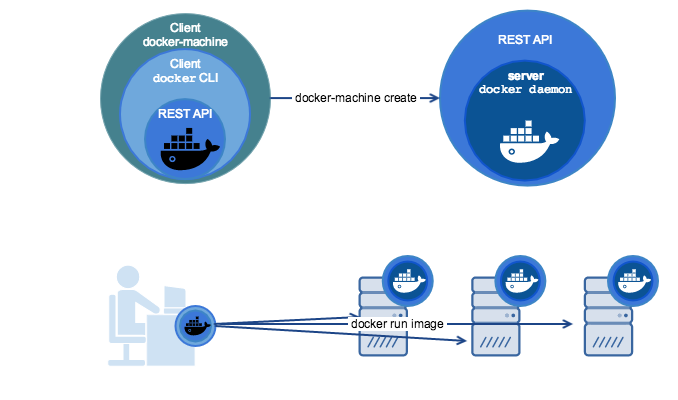

1 Decamber 2020
Routing and switching are the basic functions of network communication. ... The function of Switching is to switch data packets between devices on the same network (or same LAN - Local Area Network). The function of Routing is to Route packets between different networks (between different LANs - Local Area Networks read more.....

5 Decamber 2020
Docker is an open platform for developing, shipping, and running applications. Docker enables you to separate your applications from your infrastructure so you can deliver software quickly. With Docker, you can manage your infrastructure in the same ways you manage your applications. By taking advantage of Docker’s methodologies for shipping, testing, and deploying code quickly, you can significantly reduce the delay between writing code and running it in production.read more.....